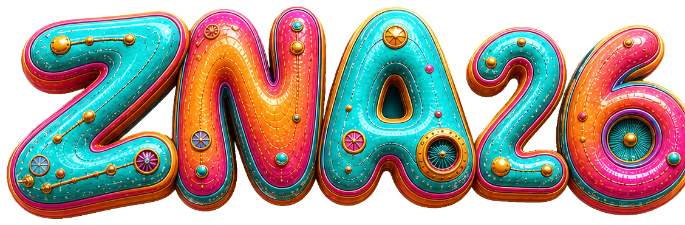

ZNA 2026
0

All
Artists
Random
My favorites
Get notified when your favorite artists go on stage.
Get notifications
Telegram
Navigate to event
Open in Waze
Open in Google Maps
Cancel
Festival map · sample placeholder
ZNA 2026
Choose your language
בחרו שפה
Escolha o seu idioma
EN
English
IL
עברית
PT
Português
↑
←
↓
→
Arrow keys to navigate